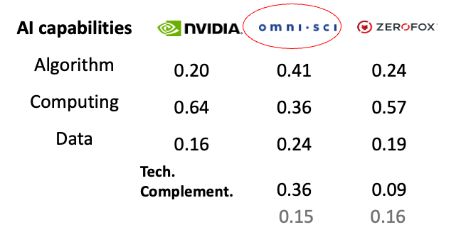
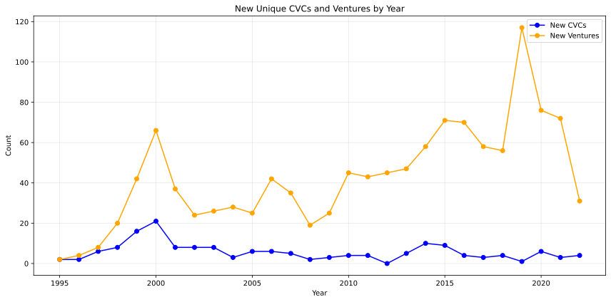
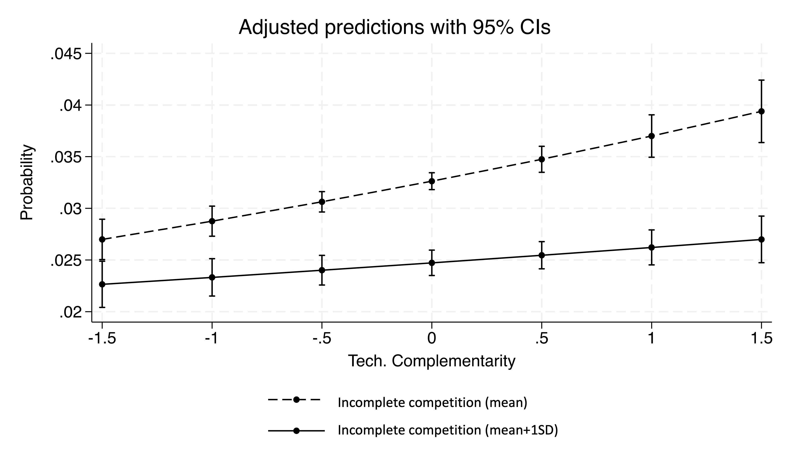

Research Presentation
Technology, Strategy, and Stakeholder Dynamics
Research Agenda: Managing Uncertainty for New Ventures
How do entrepreneurs improve performance by managing different types of uncertainty?
Research Area
Technological Complementarity and CVC Investment: The case of Artificial Intelligence
Kate Jue Wang
Penn State University
Yong Li
UNLV
Research Question: How does complementarity between CVC and ventures drive CVCs to invest in ventures?
Corporate venture capital (CVC) is defined as minority equity investment by established firms in independent ventures (Dushnitsky and Lenox, 2005; Gompers et al., 2008)
Prior Mechanism (asset complementarity):
1. Financial return mechanism (Chemmanur, et al., 2011; Gompers and Lerner, 2000)
2. Strategic option mechanism: Window on external technology (Huang and Madhavan, 2021; Katila, et al., 2008; Block and MacMillan, 1993; Wadhwa and Kotha, 2006)
This paper's mechanism (technological complementarity):
Sorting mechanism: CVC will invest in ventures when CVC parent's technological components and ventures' technological complements are complementary to each other.
Why do we need sorting mechanism?
Prior Mechanism
Asset complementarity (Teece, 2018)
Capture value by providing complementary assets(Harrison, Hitt, Hoskisson, & Ireland, 2001 ; Ketchen, Ireland, & Snow, 2007)
CVC invest in ventures
Premises
1. Control complementary specialized assets to capture value (Teece, 1986; Hart & Moore, 1990)
2. One-side decision-making where CVCs select the ventures as they need (Dyer & Singh, 1998; Harrison et al., 2001)
Tech View Shift:
From “single innovation” (Teece, 2018) to system of components(Arthur, 2009)
Examples: AI = algorithms + compute + data; UAVs (drones) = computing power + data + algorithms; Electronic cars (EVs) = combination of battery packs, power electronics, control algorithms, etc.
Challenged Premises
1. Complementarity among technological components cannot be reliably priced before outcomes are observed.
2. CVC parent firms do not have strong power over ventures (from one-sided to two-sided decision process).
• VoxelSensors — deep-tech hardware/AI sensor startup declined offers from multiple CVCs (Brett, 2025)
• FuriosaAI, a South Korean AI startup, rejected strategic offer from Meta
Overview of Today's Presentation
1. Theorize how technological complementarity between CVC firms and ventures influence the probability of CVC investment decisions through technological innovation mechanism.
2. Empirically testing the mechanism by examining 177 CVC firms, 1,205 AI ventures, and 2,496 deals during 1994-2022
3. Develop boundary conditions to confirm the mechanism
4. Rule out alternative explanations with supplement analyses and robust checks
Preview of the Findings: Evidence of a Sorting Mechanism
1. Consistent with sorting, a one–standard deviation increase in technological complementarity is associated with a 5.5% increase in the probability of CVC investment compared to the mean.
2. The effect of technological complementarity weakens when the competition is more incomplete.
3. Sorting manifests with varying intensity across technological components. Matching is strongest when CVC computing resources align with venture data or algorithmic strengths, and when CVC algorithmic capabilities align with venture data assets.
4. After CVCs investing in ventures with high technological complemenarity, CVCs and ventures jointly develop more AI patents
Definition of Key Constructs
Complementary assets: Assets whose market value increases when they are deployed together rather than separately. (Teece, 1986; Hart & Moore, 1990)
Asset complementarity between CVC firms and ventures: A condition in which a CVC firm and an entrepreneurial venture each possess assets (e.g., technologies, manufacturing, distribution, branding, regulatory access) that generate greater market performance when combined across organizational boundaries. (Dyer & Singh, 1998; Harrison et al., 2001)
Definition of Key Constructs
Complementary technological components: Technological elements that generate greater value when used jointly rather than independently. (Topkis, 1978, 1998; Milgrom & Roberts, 1990, 1998)
Technological complementarity between CVC firms and ventures: A condition in which a CVC firm and an entrepreneurial venture possess distinct technological components (e.g., algorithms, data, computing) that achieve superior technical performance when used jointly across firms. (Arthur, 2009; Gregory et al., 2021)
Example: Technological Complementarity in AI
AI as a tech system
AI has three components: algorithm, computing, and data (Gregory et al., 2021; Jacobides et al., 2021; Taddy, 2019)
Technological complementarity among algorithm, computing and data
Tech capabilities in ALL 3 are needed for AI foundational models and applications to function
Algorithm, computing power, data capabilities will perform better when the two other components are optimally arranged
Sorting Mechanism
Core Premises
1. There are two parties from two markets. They possess different attributes. (Mindruta et al., 2016; Fox & Santiago, 2014)
2. Each side observes signals of partner value, such as attribute complementarities (Sorensen, 2007; Mindruta et al., 2016)
3. Collaboration value is partner-specific (Gale & Shapley, 1962; Ostrovsky, 2008)
4. The market is competitive on both sides, with multiple potential partners (Mindruta et al., 2016; Fudge Kamal et al., 2021)
Two-Sided Matching Logic
1. Both parties evaluate potential partners based on observable attributes and seek collaborations that maximize joint value creation through complementarities. (Dyer & Singh, 1998; Mindruta et al., 2016)
2. Both parties mutually consent to form collaboration (Gale & Shapley, 1962; Kojima & Pathak, 2009)
3. Through competition, market will reach an equilibrium that parties with complementary attributes form collaborations (Ostrovsky, 2008; Fudge Kamal et al., 2021)
H1: When the technological complementarity between CVCs and ventures is high, CVCs are more likely to invest in ventures.
Technological complementarity creates asymmetric value across CVC–venture pairs (Dyer & Singh, 1998; Mindruta et al., 2016)
CVCs compete for ventures whose technologies best extend or integrate with their existing components; Ventures selectively engage CVCs whose components enhance the functionality of their existing components
Two sides reach market equilibrium through competition.
High tech complementarity lead to CVC investing in ventures
Example of Nvidia and OmniSci
Unit of Analyses
CVC-AI venture pairs from 1994 to 2022 collected from VentureXpert
AI ventures:
1. Ventures that are classified by CBinsights as AI ventures based on business descriptions
2. Ventures that have AI patents classified by USPTO categorized
Observation period:
Expert systems in 1970s-80s went nowhere; AI winter 1987-1993
In 1994, shift to neural networks and probabilistic models; computing progress; renewed funding from DARPA/Bell Lab (Campbell, Hoane & Hsu, 2002; Crevier, 1993; Hendler, 1994; Jelinek, 1998; McCorduck, 2004; Widrow, et al., 1994)
In 2022, OpenAI launched ChatGPT 3.5
Realized CVC investments
177 CVC firms, 1,205 AI ventures, and 2,496 deals during 1994-2022
Unrealized potential CVC investments
74,030 possible pairs of CVC firms and AI ventures that could have formed CVC relationships in a focal year but did not
Deal Distributions

Relative numbers of CVCs and ventures
Dependent variable
Dummy=1 if CVC investment realized, 0 otherwise
Independent variable: Technological complementarity
Euclidean distance between CVC and venture regarding their capabilities in algorithm (A), computing (C) and data (D) of AI (Gower, 1985)
1. Classify patents into algorithm, computing and data using ML model trained on patent description
Example
Learning device and learning method for object detection (Patent ID: 10002290):
0.98 - developing a new algorithm to detect objects from images.
Coherent LADAR using intra-pixel quadrature detection (Patent ID: 10000000):
0.01 - laser detection and ranging system. Unrelated to AI algorithm.
2. Euclidean Distance
Let firm $i$ have AI patent counts: $$ (A_i, D_i, C_i), \qquad T_i = A_i + D_i + C_i $$
Normalize into shares: $$ s_{A,i} = \frac{A_i}{T_i}, \quad s_{D,i} = \frac{D_i}{T_i}, \quad s_{C,i} = \frac{C_i}{T_i} $$
Define the share vector: $$ \mathbf{s}_i = (s_{A,i}, s_{D,i}, s_{C,i}) $$
Tech complementarity = Euclidean distance: $$ \Delta_{ij}^{\text{diff}} = \sqrt{ (s_{A,i} - s_{A,j})^2 + (s_{D,i} - s_{D,j})^2 + (s_{C,i} - s_{C,j})^2 } $$
Illustration of technological complementarity and CVC investment
Control Variables
Asset complementarity : CVC manufacturing and marketing assets based on data for public CVC firms (Alvarez-Garrido and Dushnitsky, 2016)
Technology overlap: # patents in same USPTO patent class between CVC and ventures, logged
Misappropriation hazards: # inventors moving out of a venture in last 10 years (Hoisl, 2007; Melero, Palomeras, and Wehrheim, 2020)
Venture survival and growth: Venture stage; Venture age; Venture patents
CVC firms: Syndicate size; experience; patents; capital under management
CVC peak (2020-2022)
Logit Model
- Model: \( P(Investment_{ijt}=1) = \frac{1}{1 + e^{-\left(\beta_1 Tech.\ Complementarity_{ijt} + \beta_2 Controls_{ijt} + \varepsilon_{ijt}\right)}} \)
- \( Tech.\ Complementarity_{ijt} \): technological complementarity between venture \( i \) and CVC firm \( j \) in year \( t \)
- \( Controls_{ijt} \): vector of control variables
- \( \beta_1 \): key coefficient capturing the impact of technological complementarity on the probability of CVC investment
- Standard errors are clustered at the CVC firm–venture pair level to account for within-dyad serial correlation arising from repeated observations of the same CVC–venture pair over time.
Results
Tech. complementarity: mean→ mean+1sd
Increase in average probability of CVC from mean = 5.5% ↑
Confirm the mechanism: Incomplete competition as a moderator
Incomplete competition
Definition: The intensity of competition among parties on one side of the market for access to a limited pool of counterparties.
CVC and ventures settle for "second best"
When competition is more incomplete, the technological complementarity between CVCs and ventures are less likley to influence the probablity of CVC investment.
Measure: Incomplete competition per CVC-venture pair
|(# CVC firm seek to invest in ventures) - (# AI ventures that are available in the market)|
Incomplete competition
51.5%↓ Confirm the mechanism: Sorting intensity across different components
Two-sided Matching Method
1. Decompose the measure of complementarity to interactions among different components and assets
2. Consider both CVCs' and ventures' choices
3. Two-sided Matching Method
Two-sided Matching Method Formula
$$ \begin{align} \text{Selection equations:} \quad & D_i^{(1)} = \mathbf{1}\{ Z_i^{(1)} \gamma_1 + u_i^{(1)} \geq 0 \}, \\ & D_i^{(2)} = \mathbf{1}\{ Z_i^{(2)} \gamma_2 + u_i^{(2)} \geq 0 \}, \\[6pt] \text{Outcome equation:} \quad & Y_i = X_i \beta + \varepsilon_i, \\[6pt] \text{Observed outcome:} \quad & Y_i^{\text{obs}} = Y_i \cdot D_i^{(1)} \cdot D_i^{(2)} . \end{align} $$Two-sided Matching Method Results
Confirm the mechanism: Post-sorting performance
Post-sorting: More joint innovation
OLS regression of the log of the depth (# patents) and scope (# patent categories) of co-filed AI patents 5 years after CVC investment
$$ \begin{array}{lrrr} \hline &Depth &Scope \\ \hline &Coeff. (p-value) &Coeff. (p-value) \\ Tech. complementarity&0.307 (0.000) &0.173 (0.003) \\ \hline \end{array} $$
Robustness Checks
• Different model specifications (probit, cluster firm and venture separately)
• Vary threshold of classifying AI patents into data, algorithm, and computing power
• Excluding the firms that applying AI for their current businesses rather than developing AI technologies
Conclusion
What?
Distinguish technological complementarity from asset complementarity:
• Prior work: Asset complementarity → anticipated value capture → investment
• This study: Tech complementarity → sorting mechanism → investment
So What?
• As more and more technology systems emerge (such as EVs, AI), Sorting mechanism reveal a closer description on how CVCs and ventures make decisions simultaneously when value capture is highly uncertain.
• Reveal relative advantages of ventures in sorting: algorithm and data
• Policy implications: reducing competitive congestion through policy intervention can help efficient allocation.